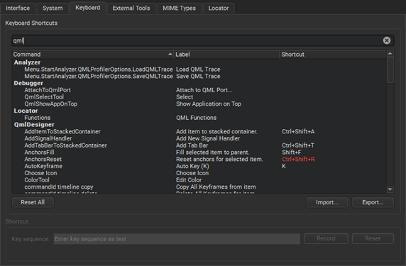

Keyboard Shortcuts
Qt Creator provides various keyboard shortcuts to speed up your development process. In addition, you can specify your own keyboard shortcuts for some functions that can be easily performed with a mouse, and therefore do not appear in menus or have default keyboard shortcuts. For example, selecting and deleting words or lines in an editor.
To view all functions available in Qt Creator and the keyboard shortcuts defined for them, select Tools > Options > Environment > Keyboard. The shortcuts are listed by category. To find a keyboard shortcut in the list, enter a function name or shortcut in the Filter field.

The shortcuts that are displayed in red color are associated with several functions. Qt Creator executes the function that is available in the current context. If several functions are available for the same shortcut at a time, there is a conflict and Qt Creator cannot execute any function.
A keyboard shortcut might also conflict with a shortcut that a Window manager uses for its own purposes. In that case, Qt Creator shortcuts do not work. Typically, you can configure the shortcuts in the window manager, but if that is not allowed, you can change the Qt Creator shortcuts. For example, Unity on Ubuntu 11.10 uses F10 in its window manager, and therefore the default Qt Creator keyboard shortcut F10 (Step Over) does not work on that system.
Configuring Keyboard Shortcuts
To customize a keyboard shortcut:
- Select Tools > Options > Environment > Keyboard.
- Select a command from the list.
- In the Key Sequence field, you have the following options:
- Enter the shortcut key you want to associate with the selected command.
- Select Record, press the keys to use as the keyboard shortcut, and select Stop Recording when you are done.
- To revert to the default shortcut, select Reset.
Qt Creator allows you to use different keyboard shortcut mapping schemes:
- To import a keyboard shortcut mapping scheme, click Import and select the .kms file containing the keyboard shortcut mapping scheme you want to import.
- To export the current keyboard shortcut mapping scheme, click Export and select the location where you want to save the exported .kms file.
Default Keyboard Shortcuts
The following tables list the default keyboard shortcuts. They are categorized by actions.
General Keyboard Shortcuts
| Action | Keyboard shortcut |
|---|---|
| Open file or project | Ctrl+O |
| New file or project | Ctrl+N |
| Open in external editor | Alt+V, Alt+I |
| Select all | Ctrl+A |
| Delete | Del |
| Cut | Ctrl+X |
| Copy | Ctrl+C |
| Paste | Ctrl+V |
| Redo | Ctrl+Y |
| Ctrl+P | |
| Save | Ctrl+S |
| Save all | Ctrl+Shift+S |
| Close window | Ctrl+W |
| Close all | Ctrl+Shift+W |
| Close current file | Ctrl+F4 |
| Go back | Alt+Left |
| Go forward | Alt+Right |
| Go to line | Ctrl+L |
| Next open document in history | Ctrl+Shift+Tab |
| Go to other split | Ctrl+E, O |
| Previous open document in history | Ctrl+Tab |
| Activate Locator | Ctrl+K |
| Switch to Welcome mode | Ctrl+1 |
| Switch to Edit mode | Ctrl+2 |
| Switch to Design mode | Ctrl+3 |
| Switch to Debug mode | Ctrl+4 |
| Switch to Projects mode | Ctrl+5 |
| Switch to Help mode | Ctrl+6 |
| Toggle Issues pane | Alt+1 (Cmd+1 on macOS) |
| Toggle Search Results pane | Alt+2 (Cmd+2 on macOS) |
| Toggle Application Output pane | Alt+3 (Cmd+3 on macOS) |
| Toggle Compile Output pane | Alt+4 (Cmd+4 on macOS) |
| Toggle other output panes | Alt+number (Cmd+number on macOS) Where the number is the number of the output pane. |
| Activate Bookmarks pane | Alt+M |
| Activate File System pane | Alt+Y |
| Activate Open Documents pane | Alt+O |
| Maximize output panes | Alt+9 |
| Move to next item in output panes | F6 |
| Move to previous item in output panes | Shift+F6 |
| Activate Projects pane | Alt+X |
| Full screen | Ctrl+Shift+F11 |
| Toggle the sidebar | Alt+0 (Cmd+0 on macOS) |
| Undo | Ctrl+Z |
| Move to Edit mode In Edit mode:
| Esc |
| Exit Qt Creator | Ctrl+Q |
Editing Keyboard Shortcuts
| Action | Keyboard shortcut |
|---|---|
| Auto-indent selection | Ctrl+I |
| Collapse | Ctrl+< |
| Expand | Ctrl+> |
| Trigger a completion in this scope | Ctrl+Space |
| Copy line | Ctrl+Ins |
| Copy line down | Ctrl+Alt+Down |
| Copy line up | Ctrl+Alt+Up |
| Paste from the clipboard history | Ctrl+Shift+V Subsequent presses move you back in the history |
| Cut line | Shift+Del |
| Join lines | Ctrl+J |
| Insert line above current line | Ctrl+Shift+Enter |
| Insert line below current line | Ctrl+Enter |
| Decrease font size | Ctrl+- (Ctrl+Roll mouse wheel down) |
| Increase font size | Ctrl++ (Ctrl+Roll mouse wheel up) |
| Reset font size | Ctrl+0 |
| Toggle Vim-style editing | Alt+V, Alt+V |
| Split | Ctrl+E, 2 |
| Split side by side | Ctrl+E, 3 |
| Remove all splits | Ctrl+E, 1 |
| Remove current split | Ctrl+E, 0 |
| Select all | Ctrl+A |
| Go to block end | Ctrl+] |
| Go to block start | Ctrl+[ |
| Go to block end and select the lines between the current cursor position and the end of the block | Ctrl+Shift+] |
| Go to block start and select the lines between the current cursor position and the beginning of the block | Ctrl+Shift+[ |
| Select the current block The second press extends the selection to the parent block. To enable this behavior, select Tools > Options > Text Editor > Behavior > Enable smart selection changing. | Ctrl+U |
| Undo the latest smart block selection | Ctrl+Alt+Shift+U |
| Move current line down | Ctrl+Shift+Down |
| Move current line up | Ctrl+Shift+Up |
| Trigger a refactoring action in this scope | Alt+Enter |
| Rewrap paragraph | Ctrl+E, R |
| Enable text wrapping | Ctrl+E, Ctrl+W |
| Toggle comment for selection | Ctrl+/ |
| Visualize whitespace | Ctrl+E, Ctrl+V |
| Adjust size | Ctrl+J |
| Lay out in a grid | Ctrl+G |
| Lay out horizontally | Ctrl+H |
| Lay out vertically | Ctrl+L |
| Preview | Alt+Shift+R |
| Edit signals and slots | F4 |
| Toggle bookmark | Ctrl+M |
| Go to next bookmark | Ctrl+. |
| Go to previous bookmark | Ctrl+, |
| Fetch snippet | Alt+C, Alt+F |
| Paste snippet | Alt+C, Alt+P |
| Find references to symbol under cursor | Ctrl+Shift+U |
| Follow symbol under cursor Works with namespaces, classes, functions, variables, include statements and macros | F2 |
| Rename symbol under cursor | Ctrl+Shift+R |
| Switch between function declaration and definition | Shift+F2 |
| Open type hierarchy | Ctrl+Shift+T |
| Switch between header and source file | F4 |
| Turn selected text into lowercase | Alt+U |
| Turn selected text into uppercase | Alt+Shift+U |
| Run static checks on JavaScript code to find common problems | Ctrl+Shift+C |
| Find and replace | Ctrl+F |
| Find next | F3 |
| Find previous | Shift+F3 |
| Find next occurrence of selected text | Ctrl+F3 |
| Find previous occurrence of selected text | Ctrl+Shift+F3 |
| Replace next | Ctrl+= |
| Open advanced find | Ctrl+Shift+F |
| Record a text-editing macro | Alt+( |
| Stop recording a macro | Alt+) |
| Play last macro | Alt+R |
| Show Qt Quick toolbars | Ctrl+Alt+Space |
| Execute user actions in FakeVim mode | Alt+V, n, where n is the number of the user action, from 1 to 9 |
Emacs Shortcuts
You can specify shortcuts for executing actions in a way that is familiar to Emacs editor users. The actions are not bound to any key combinations by default. The following actions are available:
- Copy
- Cut
- Delete Character
- Exchange Cursor and Mark
- Go to File End
- Go to File Start
- Go to Line End
- Go to Line Start
- Go to Next Character
- Go to Next Line
- Go to Next Word
- Go to Previous Character
- Go to Previous Line
- Go to Previous Word
- Insert Line and Indent
- Kill Line
- Kill Word
- Mark
- Scroll Half Screen Down
- Scroll Half Screen Up
- Yank
Image Viewer Shortcuts
| Action | Keyboard shortcut |
|---|---|
| Switch to background | Ctrl+[ |
| Switch to outline | Ctrl+] |
| Zoom in | Ctrl++ |
| Zoom out | Ctrl+- |
| Fit to screen | Ctrl+= |
| Original size | Ctrl+0 |
Design Mode Keyboard Shortcuts
You can use the following keyboard shortcuts when editing QML files in the Design mode.
| Action | Keyboard shortcut |
|---|---|
| Open the QML file that defines the selected component | F2 |
| Move between Text Editor and Form Editor | F4 |
| Toggle left sidebar | Ctrl+Alt+0 |
| Toggle right sidebar | Ctrl+Alt+Shift+0 |
Debugging Keyboard Shortcuts
| Action | Keyboard shortcut |
|---|---|
| Start or continue debugging | F5 |
| Exit debugger | Shift+F5 |
| Step over | F10 |
| Step into | F11 |
| Step out | Shift+F11 |
| Toggle breakpoint | F9 |
| Run to selected function | Ctrl+F6 |
| Run to line | Ctrl+F10 |
| Reverse direction | F12 |
Project Keyboard Shortcuts
| Action | Keyboard shortcut |
|---|---|
| Build project | Ctrl+B |
| Build all | Ctrl+Shift+B |
| New project | Ctrl+Shift+N |
| Open project | Ctrl+Shift+O |
| Select the kit to build and run your project with | Ctrl+T |
| Run | Ctrl+R |
Help Keyboard Shortcuts
| Action | Keyboard shortcut |
|---|---|
| View context-sensitive help | F1 |
| Activate contents in Help mode | Ctrl+T |
| Add bookmark in Help mode | Ctrl+M |
| Activate index in Help mode | Ctrl+I |
| Reset font size | Ctrl+0 |
| Activate search in Help mode | Ctrl+S |
Version Control Keyboard Shortcuts
| Action | Version control system | |||||
|---|---|---|---|---|---|---|
| Bazaar | CVS | Git | Mercurial | Perforce | Subversion | |
| Add | Alt+C, Alt+A | Alt+G, Alt+A | Alt+P, Alt+A | Alt+S, Alt+A | ||
| Commit/Submit | Alt+Z, Alt+C | Alt+C, Alt+C | Alt+G, Alt+C | Alt+G, Alt+C | Alt+P, Alt+S | Alt+S, Alt+C |
| Diff | Alt+Z, Alt+D | Alt+C, Alt+D | Alt+G, Alt+D | Alt+G, Alt+D | Alt+S, Alt+D | |
| Diff project | Alt+G, Alt+Shift+D | Alt+P, Alt+D | ||||
| Blame/Annotate | Alt+G, Alt+B | |||||
| Log/Filelog | Alt+Z, Alt+L | Alt+G, Alt+L | Alt+G, Alt+L | Alt+P, Alt+F | ||
| Log project | Alt+G, Alt+K | |||||
| Status | Alt+Z, Alt+S | Alt+G, Alt+S | ||||
| Undo changes/Revert | Alt+G, Alt+U | Alt+P, Alt+R | ||||
| Edit | Alt+P, Alt+E | |||||
| Opened | Alt+P, Alt+O | |||||